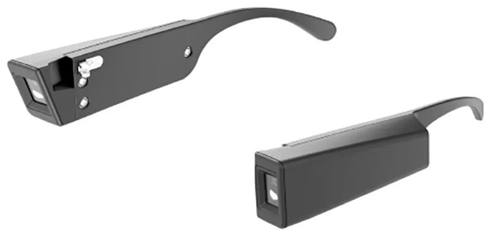

Visual Environment Evaluation Tool
https://projectveet.com/technical-overview/
Research Publication: https://www.biorxiv.org/content/10.1101/2024.09.20.614212v1

I was part of a team that designed and developed the Visual Environment Evaluation Tool (VEET).
I wrote an I2C driver to bringup the onboard ToF sensor, and wrote python visualizers to capture real-time data output to visualize the ToF sensor point clouds and other spectral information.


During qualification, I designed and executed an observation platform that automated spectral data acquisition and analysis. This tool was used as a research tool to study adolescent human ocular development through a variety of controlled experiments this specific hardware enabled.